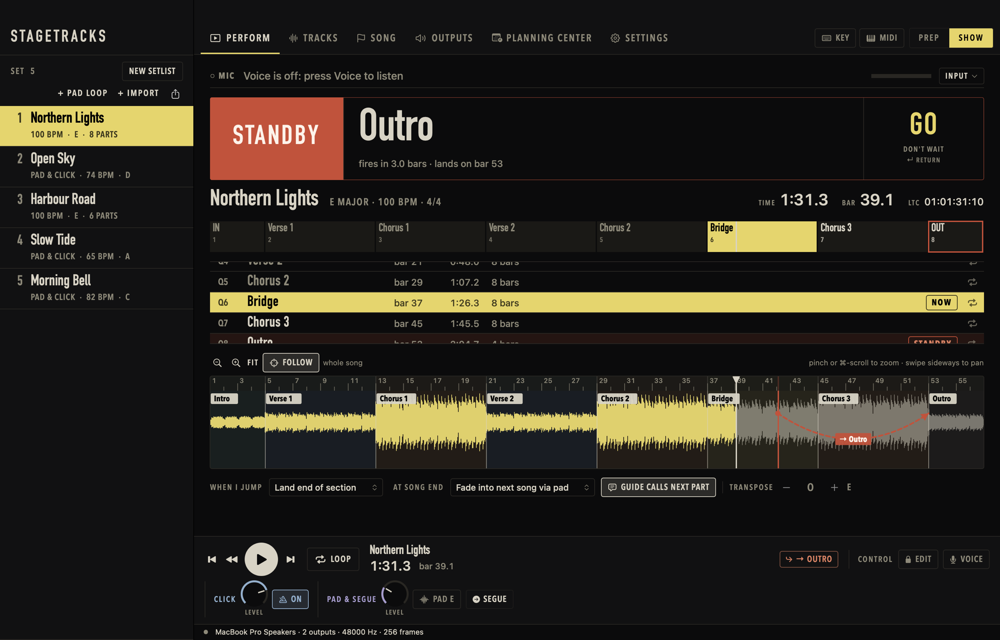
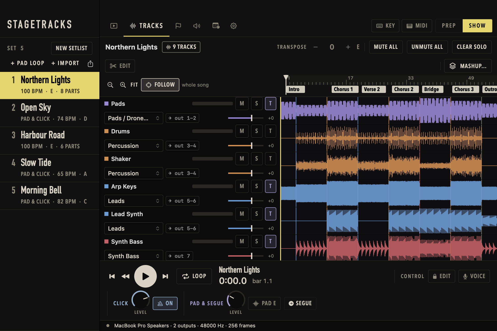
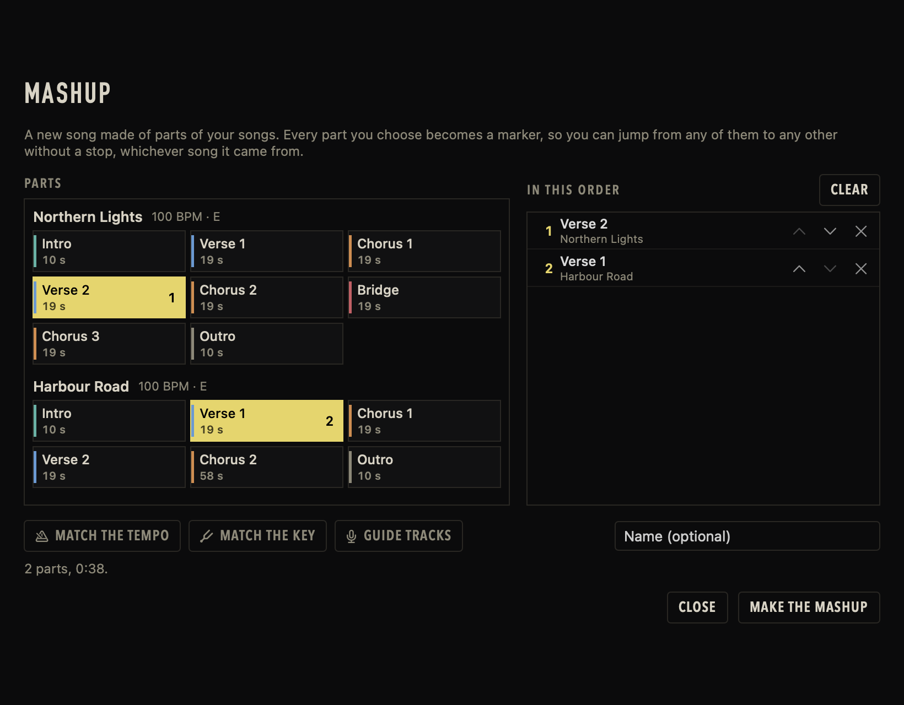
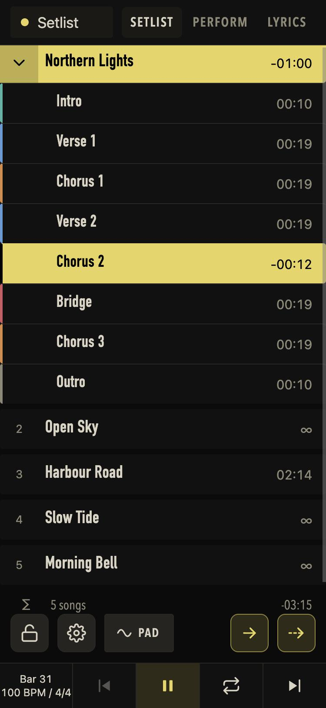
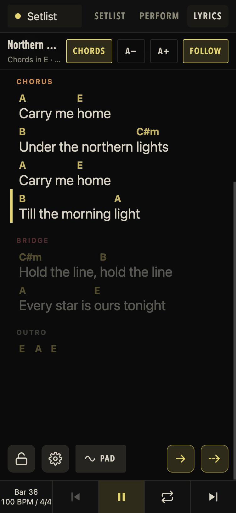

Kall neste del.
Den lander på slaget.
StageTracks spiller multitracks live på en Mac. Hopp til hvilken som helst del med stemme, tastatur, MIDI-pad eller mobil, og klikk, guide og pad følger med.
- Mac med Apple Silicon
- macOS 14 eller nyere
- Gratis under betaen
- Alle CoreAudio-grensesnitt
Hver del av hver låt er ett kall unna.
Importer en mappe med stems, så finner StageTracks beatgridet, tonearten og delene. Navnene på delene hentes fra guidesporet ditt: sier det «verse» eller «chorus», blir det en markør du kan hoppe til.
På scenen er det største på skjermen hva som kommer og når. Trykk GO, eller sett et hopp i kø og la det utløses til rett tid.
- Hopp på beatgridet
- Velg når et hopp lander: nå, på neste slag, på neste takt eller ved slutten av delen. Det lander alltid på beatgridet.
- Loop en del
- Hold delen som spilles så lenge du trenger, og slipp når du vil.
- Guiden snakker først
- Guidesporet varsler neste del én takt før den kommer.
- Overgang mellom låter
- En pad i låtens toneart bærer rommet fra én låt til neste, og klikken tar over i det nye tempoet.

Si det, så står hoppet i kø.
Slå på mikrofonen, så kan musikalsk leder styre showet: «gå til refrenget», «andre vers», «gå til bridge». StageTracks setter hoppet i kø og viser det som STANDBY til det utløses.
Talen gjenkjennes på Macen, på engelsk og norsk samtidig. Et misforstått ord matches på lyd mot delene låten faktisk har, og en kommando kan bare velge en av de delene eller en av noen få faste kommandoer.
gå til refrenget
Demo: slik viser appen en frase. Delene tilhører demolåten, nå i takt 8.
Hver stem får sitt eget spor. Klipp, flytt, omorganiser.
Stems rutes til utgangsgrupper etter filnavn, og feil rettes i sporlisten. Slå på Edit for å klippe et spor, flytte et stykke, trimme en kant eller gjenta en del på alle spor samtidig. Ingenting skrives til lydfilene dine, og ⌘Z tar det tilbake.

| 1–2 | Pads, drones, FX | |
| 3–4 | Perkusjon | |
| 5–6 | Leads | |
| 7 | Synthbass | |
| 8 | Bakgrunnsvokal | |
| 9 | Klikk | til trommisen |
| 10 | Guide | til lederen |
| 11 | LTC-tidskode | lys, video |
Også med
- Transponer
- Flytt en låt opp eller ned i halvtoner. Akkordarket følger med.
- Klikk og pad
- Et innebygd klikk og en pad som holder låtens toneart, hver på sin egen utgang.
- Tidskode
- LTC-tidskode på egen kanal, i takt med låten.
- MIDI og taster
- Lær hvilken som helst kontroll fra en MIDI-pad eller en tast på tastaturet.
- Setliste
- Sorter med dra og slipp, importer fra mapper, eksporter som PDF, tekst eller regneark, eller start en ny.
Mashups uten stopp
Bygg en ny låt av deler fra flere låter, i den rekkefølgen du velger. Tilpass tempo og toneart, så blir hver del en markør, og hopp fra refrenget i én låt til verset i en annen stopper aldri.

Mobilen eller iPaden er den andre skjermen.
StageTracks har sin egen nettside på Wi-Fi-et ditt. Åpne den i Safari eller Chrome: ingen app å installere, ikke noe internett nødvendig.
- Setlist
- Låtene og delene deres, med tiden som er igjen. Trykk på en låt eller en del for å gå dit.
- Perform
- Store knapper for delene, GO, loop, pad, klikk og segue.
- Lyrics
- Tekst og akkorder som ruller med låten.
Flere enheter kan koble til samtidig og viser alltid det samme. Sett en PIN-kode når Wi-Fi-et deles.
Tekster, akkorder og planer
Tekster og akkorder kommer fra LRCLIB, fra en tekst-, ChordPro- eller LRC-fil, eller fra Planning Center, der planens låter, akkordark, toneart og tempo kan hentes inn. Akkordene flyttes til tonearten du spiller i.


Last ned StageTracks
- Versjon
- v0.1.0 beta
- Utgitt
- 28. oktober 2026
- Fil
- StageTracks.dmg, 16 MB
- Krever
- Mac med Apple Silicon, macOS 14 eller nyere
- Pris
- Gratis under betaen
d93da89d9d0a59d13cd5c7cd306d78ecd6ad1dc32ab79a35b72dafd3d7858469Åpne diskbildet
Dobbeltklikk StageTracks.dmg og dra StageTracks til Programmer.
Åpne den første gang, forbi macOS-advarselen
StageTracks er ikke notarisert av Apple ennå, så macOS sier at den ikke kan sjekke appen.
macOS 15 eller nyere: dobbeltklikk StageTracks og trykk Ferdig. Åpne Systeminnstillinger ▸ Personvern og sikkerhet, bla til Sikkerhet og trykk Åpne likevel. macOS 14: Ctrl-klikk på appen, velg Åpne, og deretter Åpne. Du gjør dette bare én gang.
Tillat mikrofonen
Stemmekommandoer trenger mikrofonen og talegjenkjenning. macOS spør én gang; resten av appen virker uten.
Foretrekker du Terminal? Fjern karantene-merket i stedet:
xattr -dr com.apple.quarantine /Applications/StageTracks.appHvorfor advarselen?
Notarisering krever en betalt Apple-utviklerkonto, som denne betaen ikke har ennå. For å sjekke at filen er den som er lagt ut her, sammenlign SHA-256 med linjen over:
shasum -a 256 ~/Downloads/StageTracks.dmgSpørsmål
Er den gratis?
Ja, så lenge den er i beta. Hva som skjer etter betaen, kunngjøres her.
Går den på Mac med Intel?
Nei. Denne versjonen er for Apple Silicon (M1 eller nyere) og krever macOS 14 eller nyere.
Hvilket lydgrensesnitt kan jeg bruke?
Alle CoreAudio-grensesnitt, med hvor mange utganger som helst. StageTracks snakker rett med enheten, så et USB-grensesnitt med 16 kanaler får 16 utganger. Hvis en enhet oppfører seg rart, kan Outputs-fanen kopiere en lydrapport du kan sende med.
Hvilke filer kan jeg importere?
En mappe med stems per låt (WAV, AIFF, CAF, MP3, M4A eller FLAC), en mappe med låtmapper, eller slipp dem på vinduet. Stems rutes etter filnavn: Click, Guide, Synth Bass, BGVs og så videre.
Trenger jeg et guidespor?
Nei, men med ett får delene navn automatisk; hvert talt kall leses på Macen. Uten guidespor får delene nøytrale navn du kan endre, og markører kan settes for hånd.
Hvilke språk forstår stemmestyringen?
Engelsk og norsk samtidig. På macOS 26 bruker engelsk Apples nyere talegjenkjenning, som tåler støy bedre.
Er appen på norsk?
Appen er på engelsk. Stemmestyringen forstår norsk, og denne siden finnes på begge språk.
Forlater noe Macen min?
Lyd og tale blir på Macen. Oppslag du ber om, som tekster fra LRCLIB eller planene dine fra Planning Center, går til de tjenestene. Lagrer du din egen Claude API-nøkkel for den valgfrie språkmodell-reserven, sendes frasen til den tjenesten for en avgjørelse når reglene ikke kan avgjøre.
Virker den med Planning Center?
Ja. Logg inn fra Planning Center-fanen for å se tjenestene og planene dine, ta planens akkordark, toneart og tempo inn i en låt, eller legg til en plan-låt som pad- og klikk-loop. Innlogging krever en API-klient-ID du oppretter for din egen Planning Center-konto.
Noe er galt. Hvor melder jeg fra?
Åpne en sak på GitHub. Si hvilken macOS du bruker og hva du gjorde; for lydproblemer kan Outputs-fanen kopiere en lydrapport.